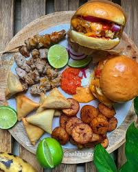
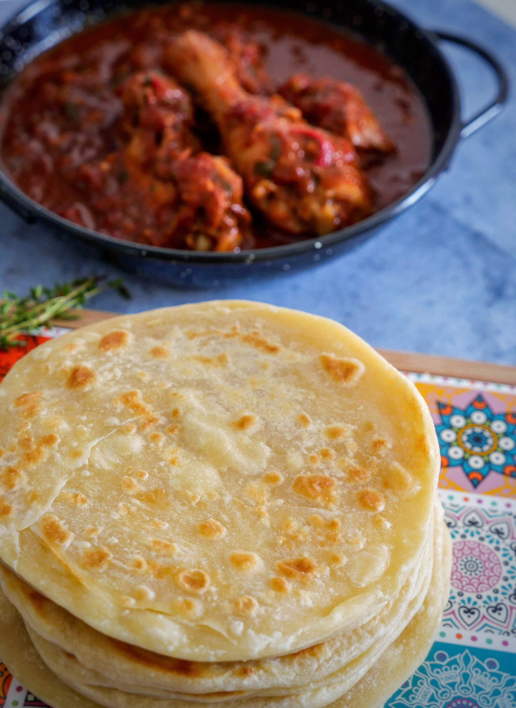

Recette n°1 : Le pilaou
Le pilaou est le plat traditionnel le plus répandu dans les différentes îles comoriennes. Il est ainsi, composé de riz rouge et de viande.
Recette n°2 : Le Couscouma
Le couscouma est un plat traditionnel composé d'un pain qu'on accompagne généralement avec une sauce.
